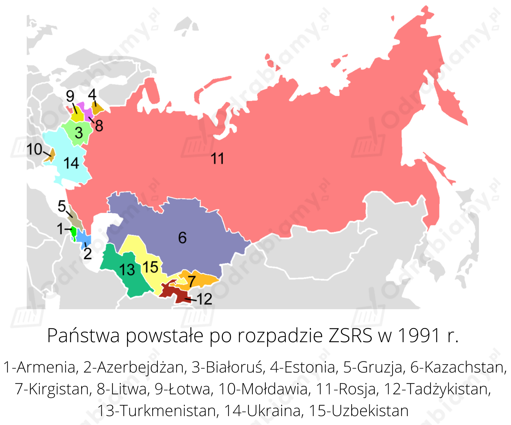

1)
| Przykładowe argumenty za koncepcją Fukuyamy | Przykładowe argumenty przeciwko koncepcji Fukuyamy |
|
|
2) Stwierdzenie "wyhodujemy ludzi z siodłami i ostrogami" oznacza, że rozwój biotechnologii może doprowadzić do podziału ludzkości na ujeżdżanych (ludzie z siodłami, ulegli) oraz ujeżdżających (ludzie z ostrogami, dominujący na innymi).
Proces rozpadu ZSRS:

Źródło mapy: Wikimedia Commons.
"Jesień Narodów" to proces przemian ustrojowych w bloku wschodnim, który doprowadził do upadku komunizmu w Europie Środkowo-Wschodniej. Kulminacyjnym tych przemian był rok 1989 r.
Największe konflikty zbrojne w latach 90. XX w.:
Tłem wojny w Zatoce Perskiej była skomplikowana struktura etniczna (Arabowie i Kurdowie) oraz związana z nią sfera wyznaniowa mieszkańców Iraku (szyici i sunnici). Wśród przyczyn konfliktu wymienia się także dyktatorską władzę Saddama Husajna, który od 1979 r. niepodzielnie rządził Irakiem oraz niestabilną sytuację ekonomiczną w Iraku (efekt wojny z Iranem). Bezpośrednią przyczyną I wojny w Zatoce Perskiej było zaatakowanie w sierpniu 1990 r. przez Irak Kuwejtu w celu przejęcia kontroli nad bogatymi złożami ropy naftowej. Po irackiej agresji na Kuwejt powstała antyiracka koalicja pod przywództwem USA (należały do niej także Polska, Wielka Brytania i Czechy), która rozpoczęła operację wojskową "Pustynna Burza" (styczeń 1991 rok). Wojna trwała do 3 marca 1991 roku, kiedy Saddam Husajn przyjął zaproponowane mu warunku rozejmu.
Kryzys w Somalii narastał od lat 80. Był spowodowany recesją gospodarczą i coraz bardziej brutalnymi rządami dyktatora Mohammeda Siada Barre. Wojna domowa w Somalii rozpoczęła się w 1991 r. obaleniem somalijskiego dyktatora. Przyczyny konfliktu zbrojnego w Somalii to brak akceptacji władzy zwierzchniej (ponieważ ludy somalijskie są ludami wojowniczymi) oraz walki rodów (Dir, Darod, Issak, Hawija, Digil i Rahawejn), które prowadzą do ciągłego braku stabilności państwa. Walki toczą się także o pobliskie tereny: Dżibuti, część Etiopii i Kenii zamieszkiwane licznie przez Somalijczyków. Żywa jest koncepcja "Wielkiej Somalii", czyli stworzenia państwa obejmującego wszystkie terytoria sporne, co prowadzi do częstych wojen z sąsiadami. Wojna z Etiopią ma także wymiar religijny (Somalia to państwo islamskie, a w Etiopii wyznaje się chrześcijaństwo). Pokój próbowano zaprowadzić między innymi poprzez prowadzoną misję ONZ oraz ustanawianie nowego rządu. Z powodu trwającej wojny domowej, suszy i głodu, w państwie panuje ogromny kryzys humanitarny.
Przyczyną wojny było dążenie Osetyjczyków do uniezależnienia się od Gruzji. 5 stycznia 1991 r. wojska gruzińskie wkroczyły do Cchinwali, stolicy Osetii Południowej i do okolicznych miejscowości. Rozpoczęła się wojna między Gruzją a separatystyczną Republiką Osetii Południowej, wspieraną przez sąsiadów z Osetii Północnej i Rosję. 24 czerwca 1992 roku doszło do spotkania prezydenta Gruzji Eduarda Szewardnadze i prezydenta Rosji Borysa Jelcyna. 14 lipca doszło do zawieszenia broni i zawarcia rozejmu, który utrzymywał się do roku 2004.
Przyczyn, które doprowadziły do wybuchu wojny domowej w Jugosławii było kilka. Za bezpośrednią przyczynę należy uznać duże zróżnicowanie kulturowe i etniczne, gdyż Jugosławia była państwem wielonarodowym. Oprócz Serbów, Słoweńców, Chorwatów i Macedończyków w Jugosławii żyli również: Czarnogórcy, Bośniacy, Albańczycy i Węgrzy. Występowały też spore różnice na tle wyznaniowym: Serbowie, Czarnogórcy i Macedończycy byli prawosławni, Chorwaci i Słoweńcy - katolicy, Bośniacy i Albańczycy - wyznawali islam. W Jugosławii pojawiło się wiele problemów społecznych i gospodarczych: bezrobocie i inflacja, z którymi nie radziły sobie władze. A po śmierci Josipa Broza-Tito, odżyły tłumione przez silną władzę dyktatorską, konflikty etniczne i religijne. Co zapoczątkowało wojnę domową i późniejszy rozpad Jugosławii.
Bezpośrednią przyczyną wybuchu konfliktu było ogłoszenie referendum oraz opowiedzeniem się przez większość mieszkańców Bośni za niepodległością. Decyzja o odłączeniu Bośni i Hercegowiny od Jugosławii spowodowała masowe protesty zamieszkujących tam Serbów. Do wojny przyczyniły się także narastające od wielu lat antagonizmy narodowościowe na terenie Bośni oraz masowe wysiedlenia oraz czystki etniczne. W wyniku wojny w Bośni i Hercegowinie, jak się szacuje, zginęło ponad 200 000 osób. Ponad połowa ludności Bośni została uchodźcami. Około 130 000 muzułmanów było więzionych i przetrzymywanych w nieludzkich warunkach w obozach, zakładanych przez Serbów. Wszystkie strony konfliktu prowadziły politykę tzw. „czystek etnicznych”, które sprowadzały się do wysiedleń lub masowych morderstw przedstawicieli przeciwnych nacji. Do Bośni zaczęli ściągać fundamentaliści z innych krajów muzułmańskich. Zakończenie wojny w Bośni i Hercegowinie przyspieszyła tragedia w Srebrenicy. Konferencja pokojowa w Dayton, podpisane w grudniu 1995 roku porozumienie pokojowe zakończyło trwającą 3,5 roku wojnę.
I wojna czeczeńska to konflikt pomiędzy separatystami czeczeńskimi usiłującymi utworzyć niepodległe państwo czeczeńskie i rosyjskimi wojskami federalnymi. Trwała w latach 1994-1996. Najważniejsze przyczyny konfliktu to: nasilenie się nastrojów nacjonalistycznych w Czeczenii, odmienność religijna (większość Czeczenów to muzułmanie), kryzys i rozpad ZSRR, nielegalne (pozbawione referendum) proklamowanie przez Czeczenów niepodległości Czeczenii. W konsekwencji wojny formalnie Czeczenia pozostała częścią Federacji Rosyjskiej, jednak w rzeczywistości, funkcjonowała jako niezależne państwo. Szacunkowo śmierć w tym konflikcie ponieść miało między 30, a 100 tysiącami ludzi. Taka duża rozbieżność wynika z skrajnych różnic w danych, które podała strona czeczeńska i strona rosyjska. Ukształtowała się grupa uchodźców wojennych.
II wojna czeczeńska została wszczęta po wkroczeniu wojsk czeczeńskich do Dagestanu w celu zbudowania silnego państwa wyznaniowego na terenie Kaukazu Północnego. Przeciwko ich działaniu wystąpiła armia rosyjska, która w krótkim czasie wyparła Czeczeńców z Dagestanu. Konflikt pomiędzy Czeczenią a Rosją nasilił się. W okresie pomiędzy październikiem 1999 r. a kwietniem 2000 r. wojna miała charakter regularny. Do ataków wykorzystywano lotnictwo, które masowo niszczyło cele strategiczne cele na terenie Czeczeni oraz wojsko lądowe, które bardzo szybko opanowało całe terytorium Czeczeni. Wszystkie ważniejsze miasta oraz wsie zostały obsadzone siłami federalnymi. II etap wojny, trwający od kwietnia 2000 r. - 15 kwietnia 2009 r. charakteryzował się walką partyzancką, które przejawiały się w organizowaniu zamachów terrorystycznych przez separatystów przeciwko stacjonowaniu wojsk rosyjskich w Czeczeni. W czasie jednego z nich został zamordowany prezydent Czeczenii Achmat Kadyrow (2004 r. w Grozne). Najtragiczniejszą w skutkach była akcja zajęcia szkoły w Biesłanie przez czeczeńskich separatystów, w konsekwencji której zginęło 334 osób, w tym większość to dzieci. Wojna zakończyła się 15 kwietnia 2009 r. wycofaniem 20 tysięcznego kontyngentu wojsk federalnych, lecz nie uspokoiło to nastrojów terrorystycznych.
Skutki podpisania traktatu w Maastricht:
1) Wspólnotach Europejskich,
2) wspólnej polityce bezpieczeństwa,
3) wspólnej polityce policyjnej i sądowej.
Cztery główne instytucje decyzyjne, które kierują administracją Unii Europejskiej to:
Bardzo ważną rolę odgrywa także Trybunał Sprawiedliwości Unii Europejskiej. Jest to organ sądowym Unii Europejskiej, który składa się z trzech elementów (organów): Trybunału Sprawiedliwości, Sądu oraz Sądu do spraw Służby Publicznej. Najważniejszym zadaniem trybunału Sprawiedliwości UE jest zagwarantowanie, by prawo UE było interpretowane i stosowane jednakowo we wszystkich państwach członkowskich. Trybunał i Sąd rozstrzygają także spory między państwami członkowskimi, instytucjami UE, przedsiębiorstwami czy osobami fizycznymi.
Pracę powyższych organów uzupełniają także Europejski Bank Centralny z siedzibą we Frankfurcie oraz Europejski Trybunał Obrachunkowy zlokalizowany w Luksemburgu.
Największe współczesne problemy cywilizacyjne to np.: